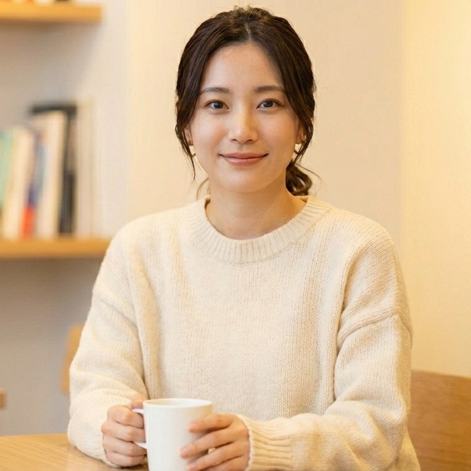
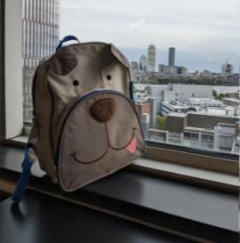
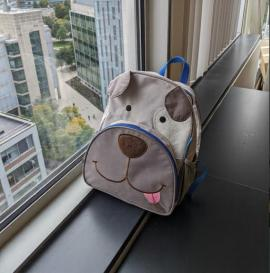
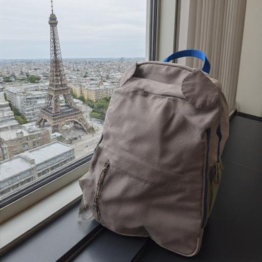
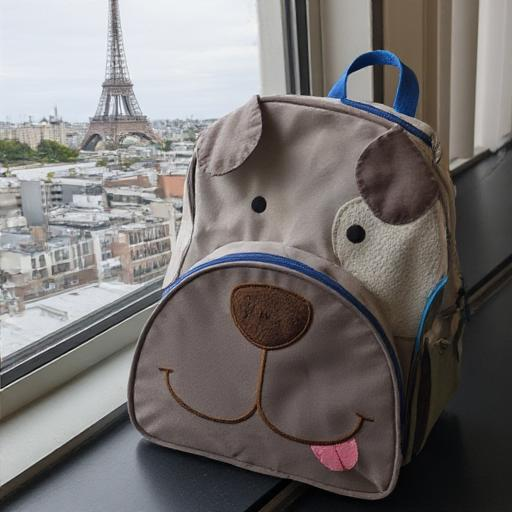
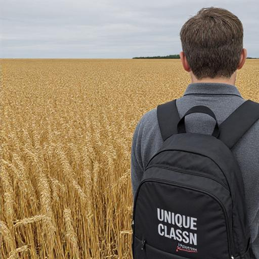
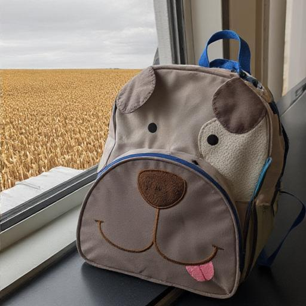
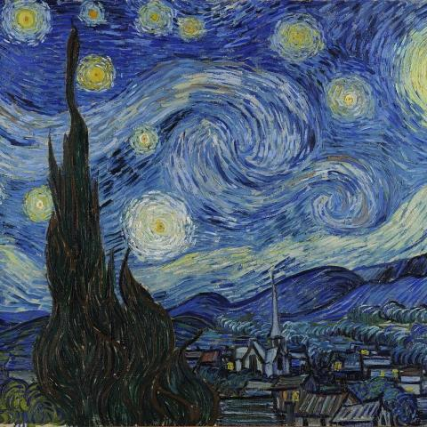
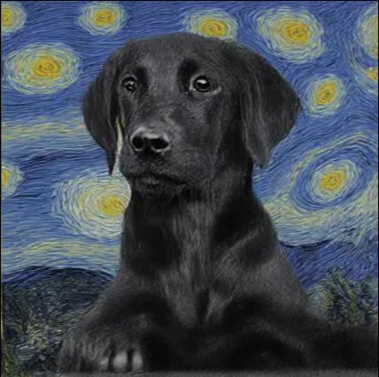

Task
In-context image generation
Reference images and a target are tiled as panels, and a diffusion transformer generates the target panel. Instructional editing is the two-panel case.
Problem
Attention is panel-agnostic
Attention receives no signal for whether two tokens share a panel. One adapter must learn the transfer across panels and preserve the synthesis within a panel.
OPRO
One orthogonal operator per panel
The operator rotates the queries and keys of its panel. Attention within a panel stays exactly as pre-trained, and only attention across panels is adapted.
How OPRO works

OPRO learns an orthogonal operator Up for each panel p and applies it to the position-aware queries and keys of a frozen backbone. The attention logit between tokens i and j becomes
- Same-panel invariance. For two tokens of one panel, Up⊤Up = I and the logit equals that of the pre-trained backbone.
- Isometry. The operators preserve query and key norms, so attention logits are not rescaled.
- Zero-interference initialization. Up = exp(LpRp⊤ − RpLp⊤) with Lp = 0, so training starts from the unmodified backbone.
Results by task
The source image is the left panel, and the model generates the edited image in the right panel.

InstructionEdit clothes into blue cardigan layered with white shirt.
Supp. Fig. 2ICEdit with OPRO on five edit categories, namely clothing, color, hair style, text rendering, and style transfer.
Two reference images of a subject fill the first two panels, and the model generates the subject in a new context in the third panel.
References


… with the Eiffel Tower


… with a wheat field in the background


Supp. Fig. 1ICEdit fine-tuned with LoRA and with LoRA and OPRO on a DreamBooth subject, shown for two prompts.
A model trained on two panels combines two references at inference by reusing the reference operator for both reference panels.


Prompt: the black dog rendered in the style of The Starry Night
High-quality artistic illustration showing the black dog from Panel A rendered in the expressive painting style of Panel B (Vincent van Gogh’s The Starry Night). Maintain the dog’s facial proportions, ear shape, fur silhouette, and overall posture exactly as in Panel A. Apply Van Gogh’s signature swirling brushstrokes, textured impasto patterns, and vibrant blue–yellow nighttime palette consistently across the entire scene. Reconstruct the background using the dynamic sky motifs, circular star patterns, and flowing motion cues from Panel B while keeping the dog as the central subject with clear definition. Render the entire query panel with thick painterly strokes, rich color layering, rhythmic texture, and stylized highlights, while keeping both context panels unchanged.
Prompt: the woman rendered in a 3D-cartoon style
High-quality 3D-cartoon illustration showing the woman from Panel A transformed into the stylized animated aesthetic of Panel B. Maintain the woman’s body proportions, trench coat silhouette, handbag, sunglasses shape, and walking posture. Translate her facial features into the expressive cartoon style: smooth contours, larger stylized eyes, simplified nose and lips, and clean character shading, while retaining her recognizable identity. Reconstruct the urban street environment using the bright, friendly, rounded architectural style seen in Panel B, with soft lighting, warm color palettes, and simplified background geometry. Render the entire query panel with smooth gradients, clean outlines, soft ambient occlusion, and consistent 3D-animation lighting, while keeping both context panels unchanged.
Supp. Fig. 3Each output takes the subject from one reference and the style from the other.
Gains on four editing pipelines
OPRO is added to four in-context pipelines and evaluated on the MagicBrush test set. ICEdit, ACE++, and InsertAnything build on FLUX.1 Fill, and UNO builds on FLUX.1.
| Method | Trainable params | L1 ↓ | CLIP-I ↑ | DINO ↑ |
|---|---|---|---|---|
| ACE++ | 76.6M | 0.1215 | 0.8658 | 0.7394 |
| + OPRO | +0.93M | 0.1114 | 0.8749 | 0.7767 |
| InsertAnything | 37.5M | 0.1327 | 0.8722 | 0.7917 |
| + OPRO | +0.93M | 0.1269 | 0.8735 | 0.8009 |
| ICEdit | 22.4M | 0.1189 | 0.8703 | 0.7706 |
| + OPRO | +0.93M | 0.0781 | 0.9002 | 0.8531 |
| UNO | 478.2M | 0.0575 | 0.9236 | 0.8961 |
| + OPRO | +0.93M | 0.0387 | 0.9281 | 0.8980 |
Table 3Quantitative results on the MagicBrush test set. OPRO uses rank 32.
Compositional reasoning benchmark
A two-stage synthetic benchmark tests the adapter in isolation. Stage 1 trains a ViT-B on a single-panel task. Stage 2 freezes the backbone and fine-tunes on an n × n grid whose rows share a hidden rule, and the model predicts the missing panel.

| Positional encoding | 2 × 2 | 3 × 3 | 4 × 4 | |||||||||
|---|---|---|---|---|---|---|---|---|---|---|---|---|
| MLP | LoRA | +OPRO | Δ | MLP | LoRA | +OPRO | Δ | MLP | LoRA | +OPRO | Δ | |
| APE | 34.90 | 38.00 | 40.50 | +2.50 | 23.70 | 24.40 | 26.30 | +1.90 | 20.00 | 19.50 | 24.20 | +4.70 |
| RoPE | 37.60 | 46.40 | 49.90 | +3.50 | 27.40 | 36.20 | 42.00 | +5.80 | 19.60 | 30.30 | 39.20 | +8.90 |
| LieRE | 33.40 | 58.10 | 58.10 | +0.00 | 29.00 | 34.20 | 42.70 | +8.50 | 20.10 | 22.90 | 26.70 | +3.80 |
| ComRoPE | 38.60 | 58.50 | 66.60 | +8.10 | 24.80 | 37.80 | 45.70 | +7.90 | 18.90 | 29.20 | 47.20 | +18.00 |
Table 1Validation accuracy (%) of a linear probe (MLP), LoRA (r = 8), and LoRA with OPRO (ρ = 8) on four positional encodings and three grid sizes. Δ is the gain over LoRA.
Abstract
We introduce a parameter-efficient adaptation method for panel-aware in-context image generation with pre-trained diffusion transformers. The key idea is to compose learnable, panel-specific orthogonal operators onto the backbone’s frozen positional encodings. This design provides two desirable properties: (1) isometry, which preserves the geometry of internal features, and (2) same-panel invariance, which maintains the model’s pre-trained intra-panel synthesis behavior. Through controlled experiments, we demonstrate that the effectiveness of our adaptation method is not tied to a specific positional encoding design but generalizes across diverse positional encoding regimes. By enabling effective panel-relative conditioning, the proposed method consistently improves in-context image-based instructional editing pipelines, including state-of-the-art approaches.
BibTeX
@InProceedings{Lee_2026_CVPR,
author = {Lee, Sanghyeon and Lee, Minwoo and Shin, Euijin and Kim, Kangyeol and Choi, Seunghwan and Choo, Jaegul},
title = {OPRO: Orthogonal Panel-Relative Operators for Panel-Aware In-Context Image Generation},
booktitle = {Proceedings of the IEEE/CVF Conference on Computer Vision and Pattern Recognition (CVPR)},
month = {June},
year = {2026},
pages = {9233-9242}
}